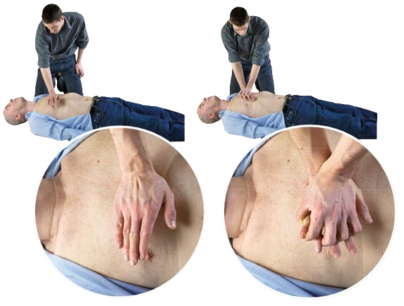

Asigură-te de faptul că victima este
întinsă pe spate, pe o suprafaţă tare.
Îngenunchează în apropierea
victimei, lângă braţul acesteia.
Pune podul palmei pe mijlocul cutiei
toracice a victimei.
Așază cealaltă palmă peste prima şi
încrucișează degetele.
Ţinând braţele întinse,
apasă în jos minimum 5 cm,
maximum 6 cm pe stern
Efectuează treizeci de compresii
toracice la un ritm de 100-120 de com-
presii pe minut

Pasul 2
Continuă cu două respirații
gură la gură.
Apleacă-i capul pe spate şi ridică-i
bărbia.
Pune o mână pe fruntea victimei şi
prinde nasul acesteia cu arătătorul
şi cu degetul mare.
Continuă să ţii bărbia victimei
ridicată folosindu-te de cealaltă
mână şi deschide-i gura.
Inspiră normal, apleacă-te peste
victimă şi suflă uniform aerul în gura victimei
timp de o secundă.
Cele două respirații gură la gură nu
ar trebui să dureze în total mai mult
de 5 secunde.